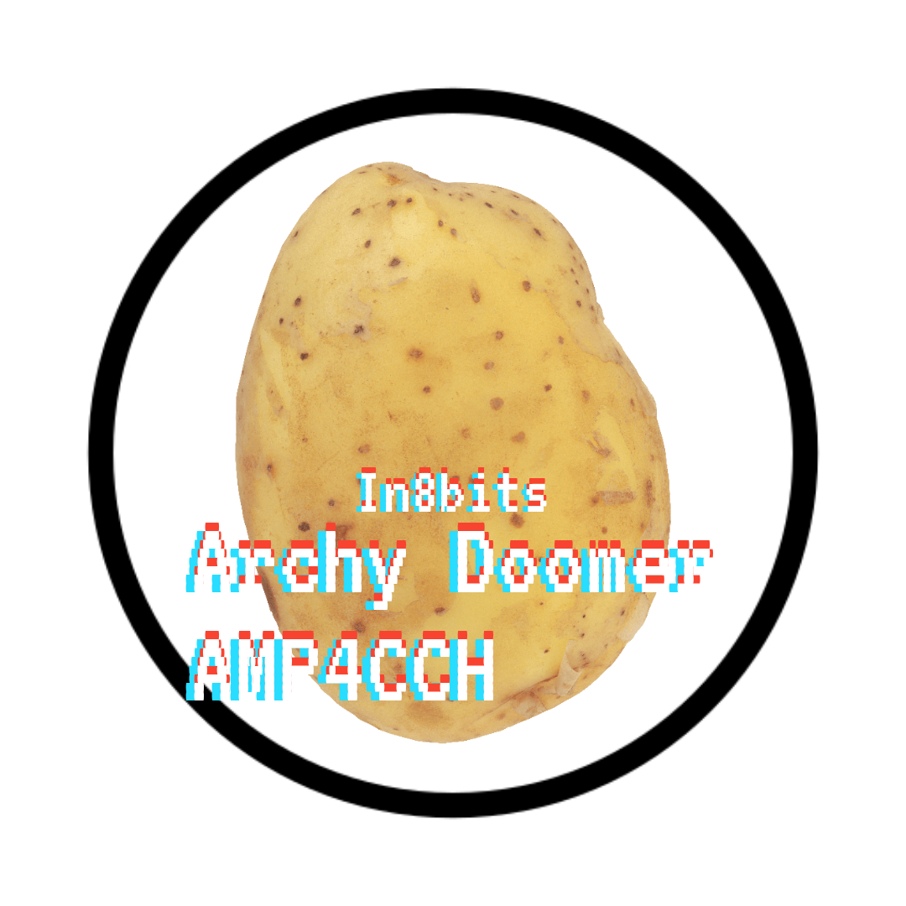

Doomer En 8Bits y en Baja Resolucion
-------------------------------------------------------
Durante los ultimos dias, dado a que el canal tiene un strike hasta abril, avance en el desarrollo del videojuego del canal, ya tengo un cuarto de prueba para 3 personajes y el diseño final de Doomer en 8bits!
Cree esta seccion para escribir los avances del juego, tal vez suba el prototipo a esta seccion de la pagina para que lo puedan descargar, Cheems tiene un sprite prototipo!
Hay una nueva cortinilla de presentacion para la intro en el juego, es la que esta en la parte de abajo de este post, me gusta como se ve, los colores son los mismo de siempre Amarillo Rojo y Blanco para los Logos
-------------------------------------------------------
Imagen del prototipo, los personajes de abajo son prototipos de sprite para los enemigos, que seran los seguidores de Sucubo Matrioshka, aun no se en que epoco temporada o Universo se situe el juego, pero es posible que Sucubo sea el final boss.

-------------------------------------------------------
-------------------------------------------------------